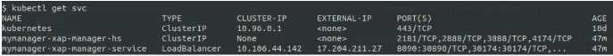

As part of the basic functionality of a
When deployed on Kubernetes, the server side is isolated in its pods, and external access must be configured in order to enable Space-based remoting so the proxy and the server can communicate with each other. External access is provided via the pod URL, which contains either the port value that was defined for the service, or the nodeport value (which can be either random or assigned).
For more information about Space-based remoting, see the
To sum up, you need to define the following in order to enable Space-based remoting in Kubernetes:
As explained in the
The following sections provide more details about each service type.
This is the default service type for both the Manager and the service. The load balancer is external to the pod and sits outside the cluster. On startup, Kubernetes creates a load balancer for each service that provides remote access as follows:
In Space-based remoting, every Space instance is exposed as a service. In high availability configurations this can lead to a large number of load balancers; for example, a single 4-partition service is seen by Kubernetes as 8 services and therefore requires 8 load balancers because in high availability configuration each primary Space instance has a backup instance. This can lead to high costs in the cloud.
The NodePort service type exposes each service on a specific node port that can be assigned randomly, or specified when you install the Helm charts. When using the NodePort service type, the pod registers in the LUS with the assigned IP address.
The problem with specifying node ports is that pods may move to different nodes during runtime, for example if the current node crashes. This means that they then have different node port values and services can't find the pods on the new nodes. Additionally some cloud services such as Amazon AWS require setting firewall rules that open node ports explicitly in order to support remote client access.
To resolve these issues, the service (pu/values.yaml) Helm chart contains an additional value called initialNodeport for the LRMI. By default, this property is empty and Kubernetes assigns a node port randomly for each servic,e using the range 30000-32767. If you want to specify the node ports rather than expose the entire range, y ou can specify the initial port number and
helm install insightedge-pu --name testspace --set manager.name=testmanager, service.type=NodePort, service.lrmi.InitialNodePort=31200This option requires exposing the assigned ports to external access. You also have to ensure that the assigned ports aren't being used by another service in your cluster.
There are three services for each service type:
api - REST Manager API, which is used to administer Space-based operations.lus - Lookup service for the data grid.lrmi - Communication protocol between Spaces and In the manager Helm chart, all of the services are enabled and this configuration should NOT be changed. In the service Helm chart, the LRMI service is disabled by default to prevent unnecessary load balancers from being deployed.
To enable Space-based remoting, you must enable the LRMI service (change the enabled value to true). This enables external communication with the remote client.
Default ports are assigned to these services. You can configure a service to use a different port, as in this example that configures the manager api to use the REST Manager API:
helm install insightedge-manager --name testspace --set service.type=NodePort, service.api.port=8290As explained above, the nodePort value is undefined by default.
You can view the services and ports for each service using the following command:
kubectl describe svc <service name>You can configure the Kubernetes Space cluster to enable data operations from remote clients. After remote client access is enabled, a
On the server side, each Space instance must be exposed as a service. To do this, set the service.lrmi.enabled value to true. This enable the lrmi service for the Space when you install the Helm charts. For example, see the following command:
helm install insightedge-pu --name testspace --set manager.name=testmanager,set service.lrmi.enabled=trueIf the service type is loadBalancer, you should disable the lrmi in the service Helm chart when Space-based remoting is no longer required, This will free the load balancer resources that were allocated for Space-based remoting.
After enabling the LRMI service to support external client access, you need to create a
kubectl get svc
This generates the following output:

For example in your Java code
>>> Should we update sample output for current loadbalance IP (4174) or use Nodeport
GigaSpace gigaSpace = new GigaSpaceConfigurer(new SpaceProxyConfigurer
("testspace").lookupLocators(“17.204.211.27:30174”)).gigaSpace();
If you are using Minikube, you can use 192.168.99.100:30174.
>>> TBD if following section should be included. Can we provide any reason to change default class loaing mechanism?
In non-Kubernetes environments,
Simple class loading is supported in all environments - on-premise, cloud, and hybrid.
To configure your com.gs.transport_protocol.lrmi.simple-classloading system property to true.